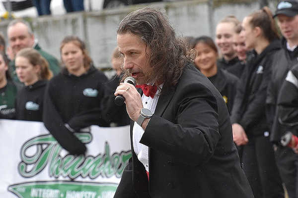
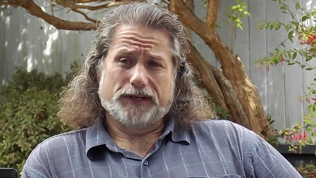

Mark Donnelly Gives no Fucks
December 5th, 2020
The Canadian Press:
TDC_ARTICLE_START
The popular singer of O Canada at the Vancouver Canucks hockey games says he knew he might lose his job for standing up against what he describes as the "tyranny" of COVID-19 restrictions.
Mark Donnelly sang the anthem at an event called the Christmas Freedom Rally in Vancouver on Saturday, where hundreds of people protested restrictions imposed by B.C.'s provincial health officer.
TDC_ARTICLE_STOP
Mark Donnelly
I am beyond pissed that I didn't hear about this Christmas Freedom Rally before now. Sure, it sounds kind of silly, but it's nice to get out and about and meet some goy-adjacent people. Remember, 90% of what we believe is already extremely popular, such as putting the WMD Liars on public trials, or nationalizing important infrastructure like Google, or throwing Child Abusers like Wallace Wong in jail, and ending Child Trannies. So, going there, and getting some feelers out with some good optics "hey, did you know you are immune to COVID-19 as long as you're in BLM looting a Target, AMIRITE MARINES?" is a serious missed opportunity.
As for Mark Donnelly himself, what he says is so on the money, that I think I'm going to print out most of this article in full.
TDC_ARTICLE_START
Donnelly told the crowd, many of whom weren’t wearing masks or physically distancing, that he decided to sing because he questions the “draconian lockdown protocols.”
“What was originally sold as 15-day hunkering down sprint for the common good has turned into a 10-month marathon from hell, where the finish line is constantly being moved further into the distance,” he said.
He said he doesn’t think health officials have done a cost-benefit analysis looking at the harms of the restrictions compared with preventing the spread of COVID-19.
“As someone known for singing our great national anthem, I’m standing up against what I feel is tyranny, plain and simple,” he said to applause and cheers from the crowd.
Donnelly said his firing is censorship by an institution that he’s followed for 50 years and been publicly associated with since 2001.
“Sports figures, entertainers, politicians, et cetera, can stand for anything as long as it supports the narrative. You can support rioting, looting, destruction of livelihoods and reputation, but take a position against the narrative and you are worthy of exile or worse.”
Donnelly said he hasn’t had direct contact with Aquilini or the Canucks and if he is no longer with the team, a phone call would have been a more respectful way to find out his reasons for taking part in the rally.
He had hoped the ownership and management of the Canucks would have had the “courage to support the freedom to express [a] science-based position that is for the greater good of the country,” he said.
TDC_ARTICLE_STOP

I am genuinely impressed. What he said is almost perfect, and could easily have come directly out of my mouth in a similar situation.
We should congratulate Donnelly, partly for having these insights, but mostly for having the courage to put himself out there, risking his employment, and speaking Truth to power. Mark Donnelly did not have to sing for the Anti-Abortion Caravan in Vancouver, nor did he have to do this. Nor has he personally gained from doing either. Instead, Donnelly has shown himself to be one who thinks first of others, second of himself. That is something we can all believe in.
TDC_ARTICLE_START
After listening to speeches on Saturday at the Vancouver Art Gally, the protesters then took to the streets in a march.
Vancouver police spokeswoman Tania Visintin said police need to exercise discretion with large groups of protesters violating public health orders, saying public safety is the priority.
She said mass arrests or ticketing could escalate an already tense situation.
TDC_ARTICLE_STOP
So basically the Pension Seekers in Blue stood there with their thumbs up their asses, which is precisely why I can't find any pictures of this event online. They don't want you to see the cops being impotent in the face of massed citizens, because that would inspire others. It would also shut down the Internet Autist's favourite excuse for doing nothing "because the cops will just shoot you."
A similar thing happened when 200+ White Men burnt down a fishery over an anti-White dispute over fishing. Ultimately, if you're not willing to tell the police to go fuck themselves, you're not worthy of power, and you're not going to get any.